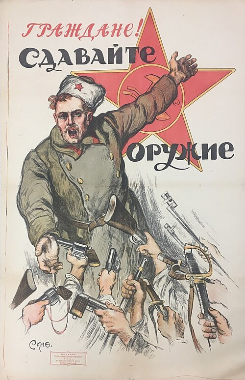
Граждане! Сдавайте оружие
1918 г.
Один из первых агитационных плакатов молодой Советской республики. Создан в период острой нехватки оружия для формирующейся Красной Армии. После Октябрьской революции и роспуска старой армии, новая власть столкнулась с проблемой вооружения. Декрет СНК от 10 декабря 1918 года обязывал население сдать все имеющееся оружие. Плакат Апсита стал визуальным воплощением этого призыва, обращаясь к гражданскому долгу и патриотизму. Художник использовал яркие цвета и простую композицию, чтобы донести послание до широких масс населения, многие из которых были неграмотными.
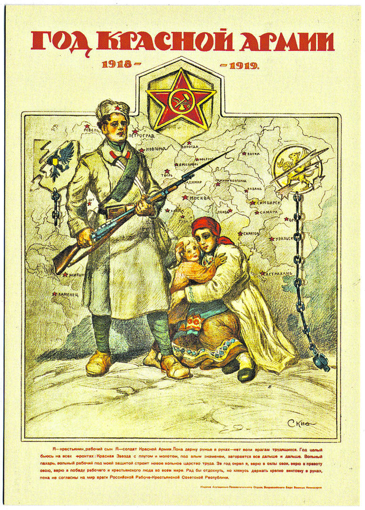
Год Красной Армии. 1918-1919
1919 г.
Юбилейный плакат, посвящённый первой годовщине создания Рабоче-Крестьянской Красной Армии (РККА), основанной 23 февраля 1918 года. К 1919 году Красная Армия превратилась из разрозненных отрядов в организованную военную силу, способную противостоять белогвардейским армиям и интервентам. Плакат символизирует укрепление советской власти и военной мощи. Апсит использовал героические образы красноармейцев, подчёркивая их решимость защищать завоевания революции. Этот период был критическим: белые армии наступали с нескольких направлений, и моральный дух войск играл решающую роль.
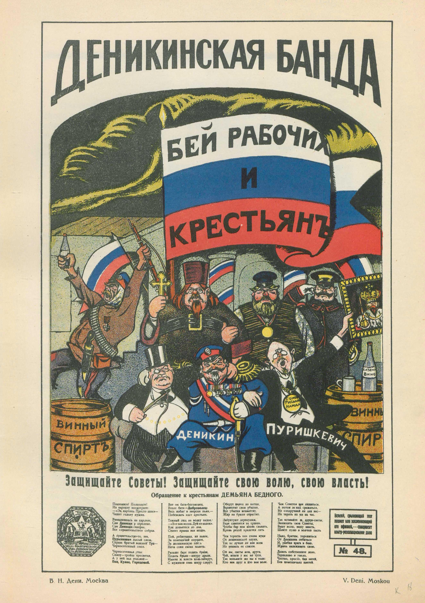
Деникинская банда
1919 г.
Сатирический плакат, направленный против армии генерала Антона Деникина, одного из главных лидеров Белого движения. Летом-осенью 1919 года войска Деникина представляли наибольшую угрозу для Советской власти, дойдя до Орла и Воронежа. Дени, мастер политической карикатуры, изображает белогвардейцев как бандитов и грабителей, подчёркивая их связь с иностранными интервентами и помещиками. Плакат был частью масштабной агитационной кампании, призванной дискредитировать белое движение в глазах крестьян и рабочих. Художник использовал гротескные образы и яркие цвета, делая послание понятным даже неграмотному населению.
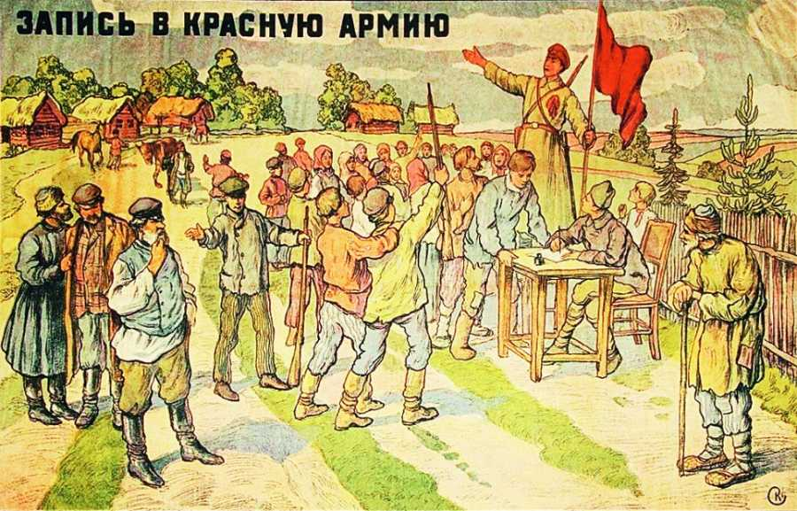
Запись в Красную Армию
Агитационный плакат, призывающий к добровольной записи в ряды Красной Армии. В период Гражданской войны мобилизация была одной из ключевых задач советской власти. Плакат показывает процесс записи добровольцев, подчёркивая массовый характер движения. Спасский использовал реалистичный стиль, изображая обычных рабочих и крестьян, принимающих решение встать на защиту революции. Композиция передаёт атмосферу патриотического подъёма и единства народа перед лицом угрозы со стороны белогвардейцев и интервентов. Такие плакаты размещались в военкоматах, на фабриках и в деревнях.
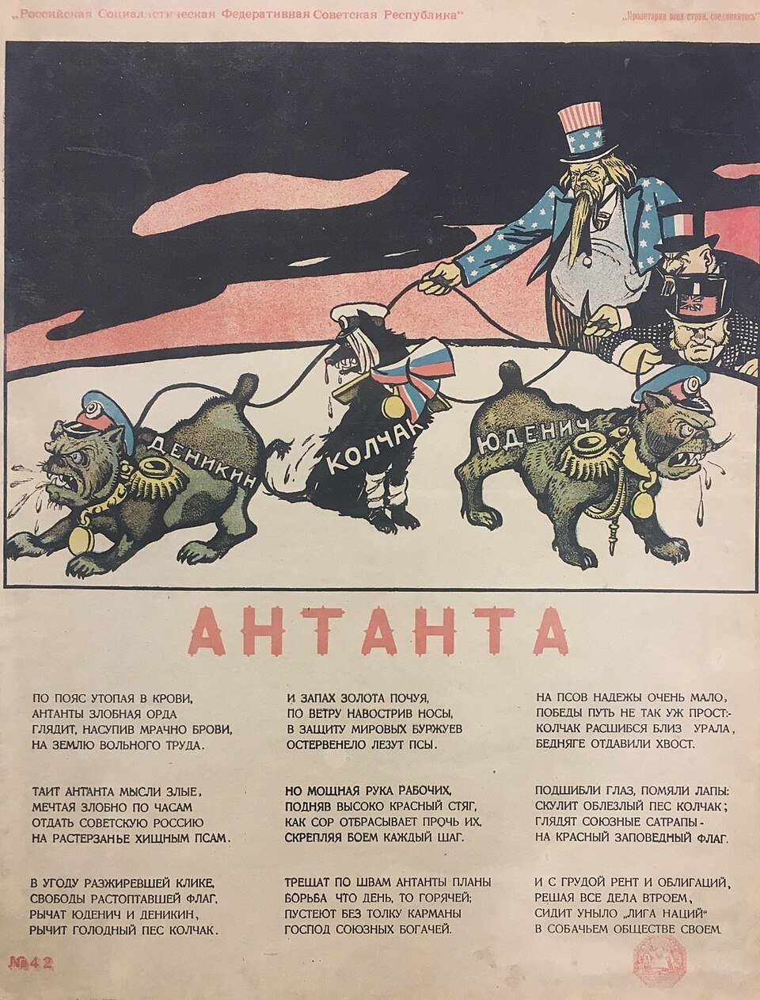
Антанта
1919 г.
Сатирический плакат, разоблачающий роль стран Антанты (Великобритании, Франции, США) в поддержке Белого движения. После окончания Первой мировой войны западные державы начали интервенцию в Россию, снабжая белогвардейцев оружием, деньгами и войсками. Дени мастерски изображает лидеров Антанты в образе хищников, пытающихся растерзать Советскую Россию. Плакат был частью кампании по разоблачению иностранного вмешательства и призван был показать народу, что белогвардейцы — это марионетки западных империалистов. Художник использовал узнаваемые символы и карикатурные образы для создания яркого антиимпериалистического послания.
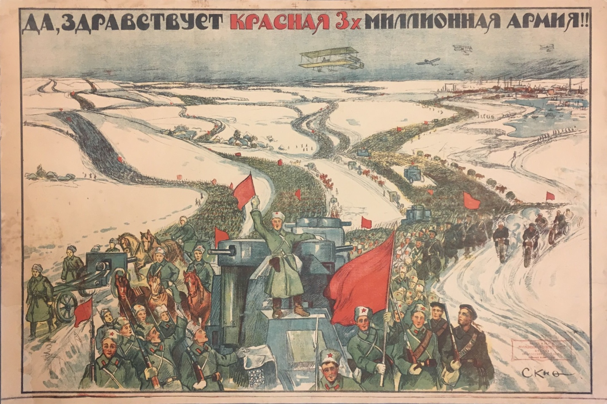
Да здравствует Красная 3-х миллионная армия!
1919 г.
Триумфальный плакат, отмечающий достижение Красной Армией численности в три миллиона бойцов. Это был важнейший рубеж в военном строительстве молодой Советской республики. К середине 1919 года, благодаря массовой мобилизации и добровольческому движению, РККА превратилась в крупнейшую военную силу на территории бывшей Российской империи. Апсит создал монументальную композицию, символизирующую мощь и единство красноармейцев. Плакат призван был вселить уверенность в победе и показать, что революция имеет массовую поддержку. Цифра в три миллиона стала важным пропагандистским аргументом против белогвардейцев и интервентов.
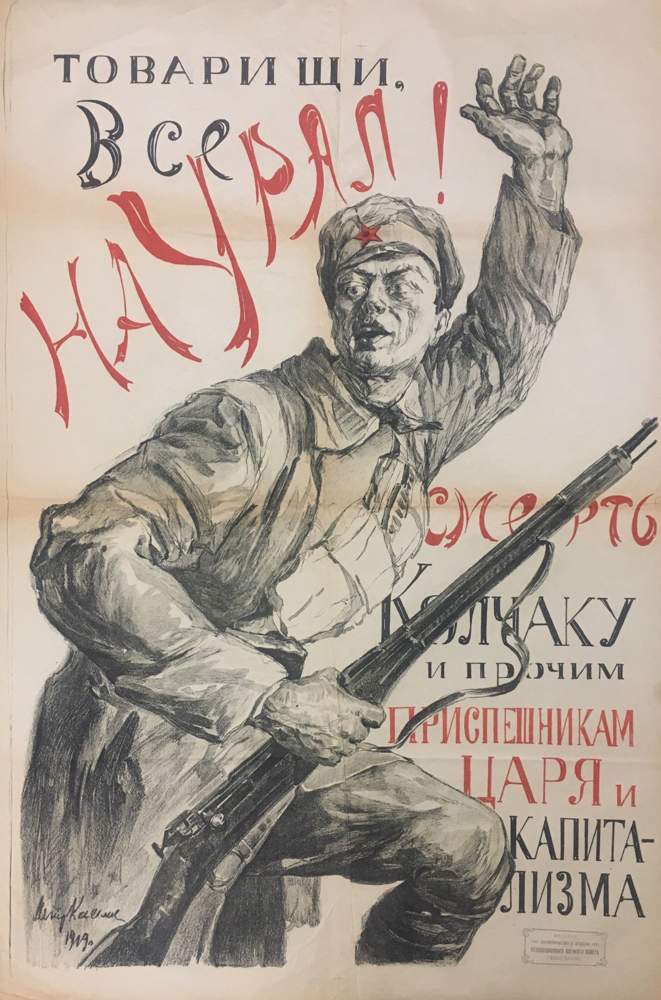
Товарищи, все на Урал!
1919 г.
Мобилизационный плакат, призывающий к защите Урала от наступления белогвардейских войск адмирала Колчака. Весной 1919 года армия Колчака начала масштабное наступление с востока, угрожая захватом Урала — важнейшего промышленного региона с заводами, производящими оружие и боеприпасы. Потеря Урала означала бы катастрофу для Красной Армии. Киселис создал динамичную композицию, передающую срочность момента и призывающую к немедленным действиям. Плакат распространялся в центральных губерниях России для мобилизации добровольцев и ресурсов на уральское направление. Летом 1919 года Красная Армия смогла остановить и отбросить войска Колчака.
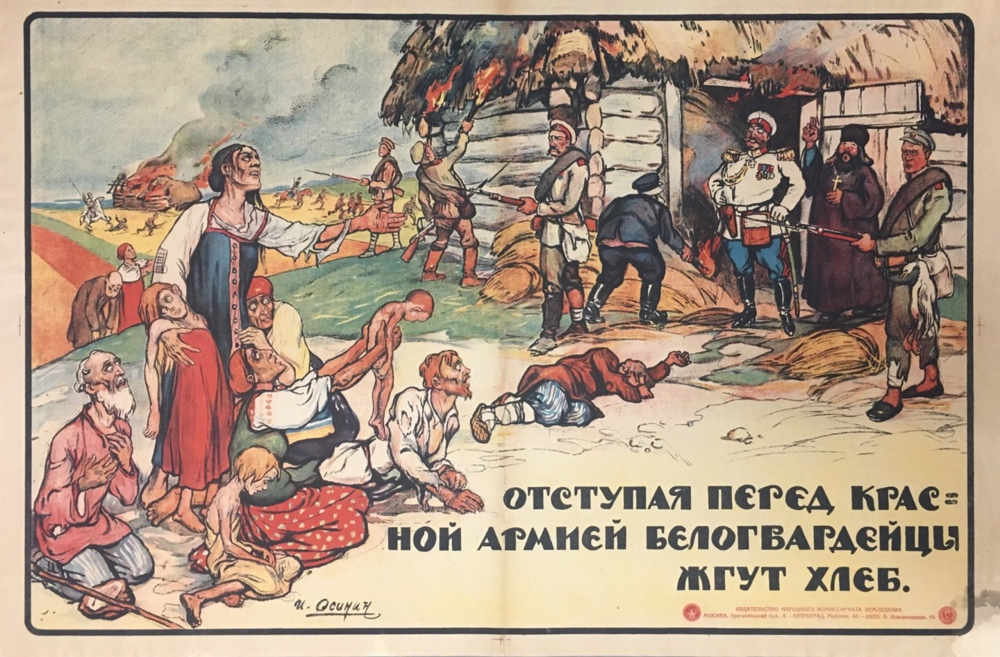
Отступая перед Красной армией, белогвардейцы жгут хлеб
1919 г.
Драматический плакат, обличающий тактику «выжженной земли», применявшуюся белогвардейцами при отступлении. В 1919 году, отступая под натиском Красной Армии, белые войска часто уничтожали продовольственные запасы, чтобы они не достались противнику, обрекая местное население на голод. Апсит создал эмоционально сильный образ, показывающий страдания крестьян от действий белогвардейцев. Плакат был частью пропагандистской кампании, призванной показать, что белые несут разрушение и голод, в то время как Красная Армия защищает народ. Тема продовольствия была критически важной в условиях разрухи и голода, охвативших страну в годы Гражданской войны.
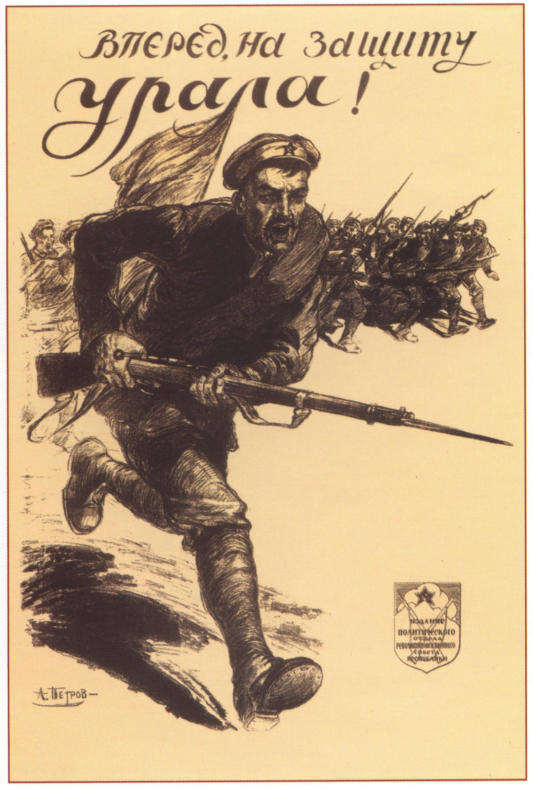
Вперед, на защиту Урала!
1919 г.
Героический призыв к обороне Урала от войск адмирала Колчака. Весной 1919 года колчаковская армия представляла серьёзную угрозу, продвигаясь к Волге и угрожая Москве. Урал с его заводами был жизненно важен для снабжения Красной Армии оружием и боеприпасами. Апсит создал динамичную композицию с красноармейцами, устремляющимися в бой, символизируя решимость защитников революции. Плакат использовал патриотические мотивы и образы народных героев, призывая к самопожертвованию ради общего дела. Уральская операция стала переломным моментом в борьбе с Колчаком — к лету 1919 года его армия была разгромлена и отброшена в Сибирь.
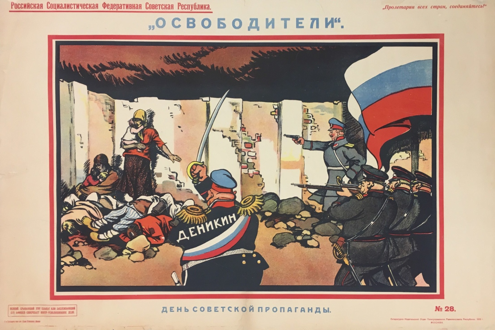
Освободители
1919 г.
Едкая сатира на белогвардейцев и интервентов, называвших себя «освободителями России от большевизма». Дени мастерски разоблачает лицемерие этого лозунга, показывая, что белые несут не освобождение, а грабежи, насилие и возвращение старых порядков. Плакат создан в период, когда белые армии контролировали значительные территории и активно использовали пропаганду об «освобождении» России. Художник использует гротескные образы и символы, чтобы показать истинное лицо белогвардейцев и их иностранных покровителей. Такие плакаты были особенно эффективны среди крестьян, опасавшихся возвращения помещиков и старых порядков при победе белых.
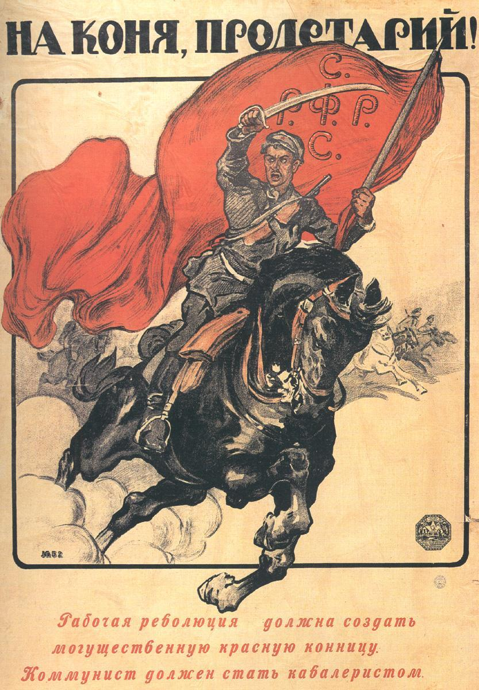
На коня, пролетарий!
1919 г.
Призыв к формированию красной кавалерии — одного из решающих родов войск в Гражданской войне. В 1919 году стало очевидно, что для победы над мобильными белогвардейскими конными армиями необходима сильная кавалерия. Плакат обращается к рабочим, традиционно не связанным с конным делом, призывая их освоить новую роль. Апсит создал героический образ пролетария-кавалериста, символизирующий единство города и деревни в борьбе за революцию. Формирование конных армий под командованием Будённого и других командиров стало важным фактором побед Красной Армии. Плакат отражает романтизацию кавалерии, ставшей символом революционной доблести и мужества.
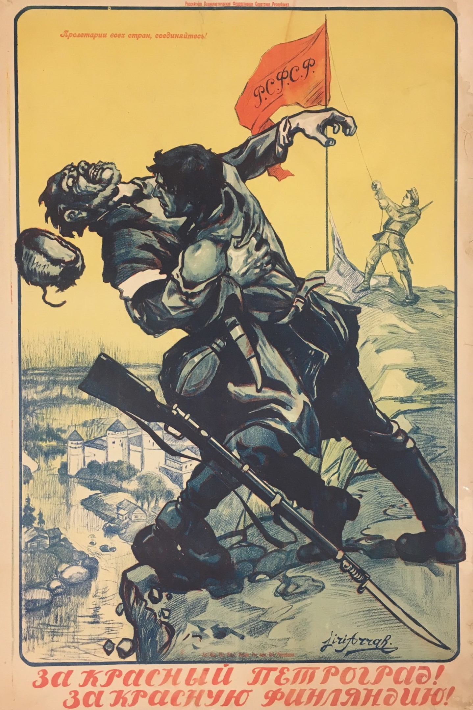
За Красный Петроград! За Красную Финляндию!
1919 г.
Плакат, призывающий к защите Петрограда и поддержке финских революционеров. Осенью 1919 года генерал Юденич предпринял наступление на Петроград, бывшую столицу и колыбель революции. Угроза захвата города белогвардейцами была реальной — войска Юденича подошли к окраинам Петрограда. Одновременно в Финляндии, получившей независимость, шла борьба между красными и белыми финнами. Аррак, финский художник-коммунист, создал плакат, объединяющий борьбу за Петроград с идеей пролетарской солидарности. Героическая оборона Петрограда стала одним из ключевых эпизодов Гражданской войны, а город устоял благодаря мобилизации всех сил.
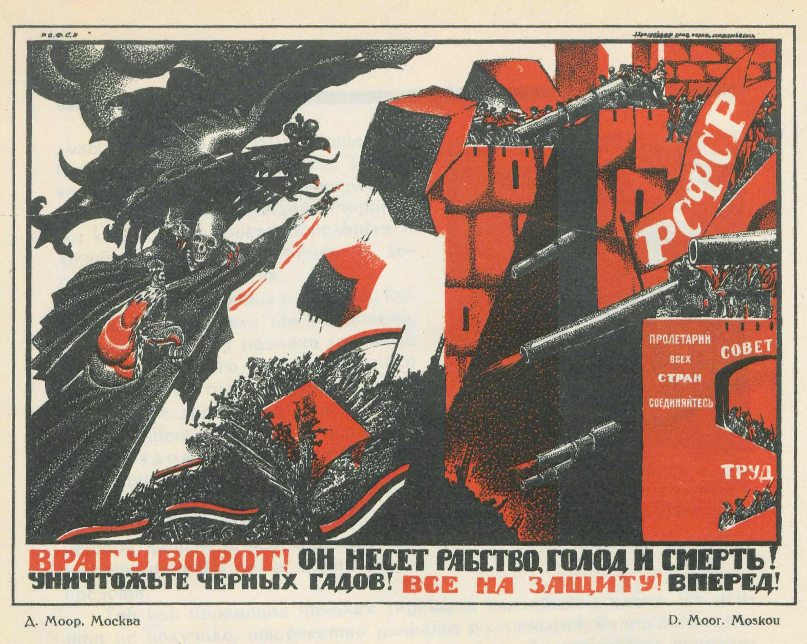
Враг у ворот! Он несет рабство, голод и смерть!
1919 г.
Один из самых драматичных плакатов Гражданской войны, созданный в критический момент осени 1919 года, когда белогвардейские армии наступали на Москву с трёх направлений. Деникин с юга дошёл до Орла, Юденич угрожал Петрограду, остатки армии Колчака действовали на востоке. Моор создал апокалиптический образ врага, несущего смерть и разрушение, призывая к тотальной мобилизации всех сил для защиты революции. Плакат использует мощные символы и контрастные цвета, создавая атмосферу чрезвычайной опасности. Это был момент наивысшего напряжения Гражданской войны, когда судьба Советской власти висела на волоске. Плакат сыграл важную роль в мобилизации населения на решающую борьбу.
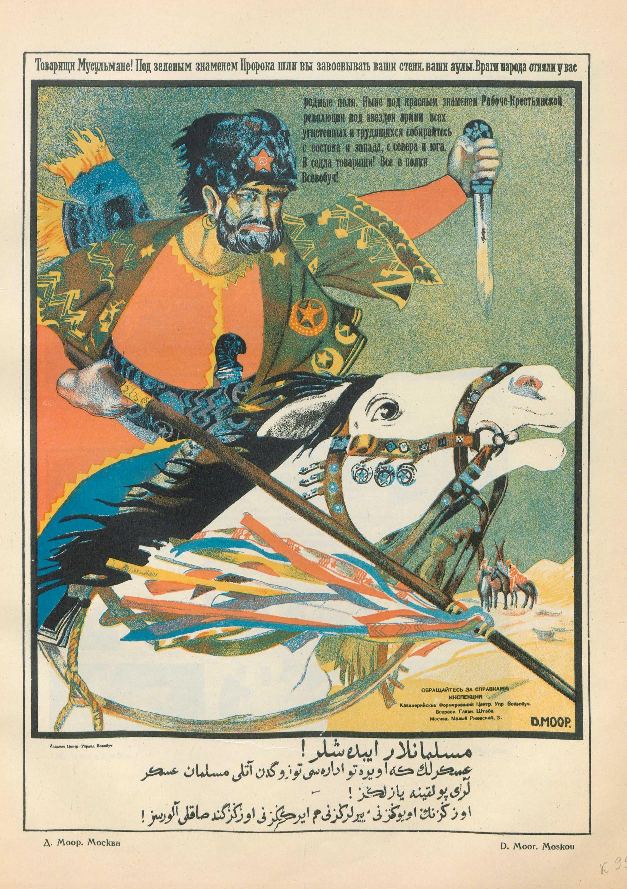
Товарищи мусульмане!
1919 г.
Уникальный плакат, отражающий национальную политику большевиков в период Гражданской войны. Советская власть стремилась привлечь на свою сторону мусульманское население бывшей Российской империи, обещая равноправие и освобождение от колониального гнёта. В 1918-1919 годах на территории Средней Азии, Поволжья и Кавказа шли ожесточённые бои между красными и белыми, и поддержка местного населения была критически важна. Моор создал образ, сочетающий исламскую символику с революционными лозунгами, показывая единство всех трудящихся независимо от религии. Плакат распространялся в мусульманских регионах и переводился на тюркские языки, став важным инструментом большевистской пропаганды среди нерусских народов.
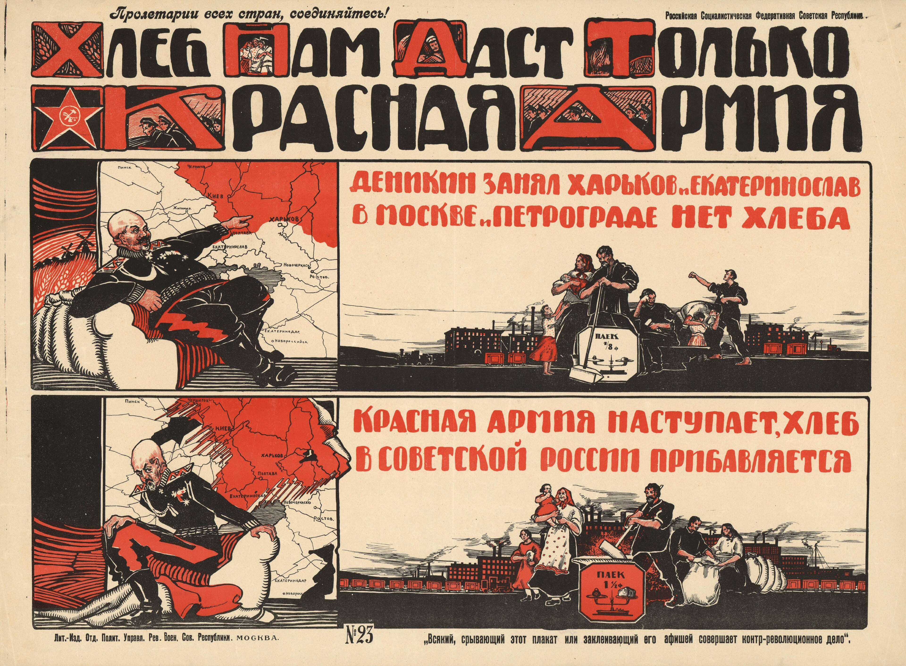
Хлеб нам даст только Красная армия
1919 г.
Плакат, связывающий продовольственный вопрос с военными успехами Красной Армии. В 1919 году Советская Россия переживала острейший голод — хлебородные регионы Украины, Дона, Кубани и Поволжья находились под контролем белых армий. Деникин и Колчак контролировали основные зернопроизводящие территории, что создавало катастрофическую ситуацию с продовольствием в центральных губерниях. Поманский создал прямую связь между военной победой и выживанием населения, показывая, что только освобождение хлебных регионов может спасти от голода. Плакат отражает реальность Гражданской войны, когда контроль над территориями означал контроль над продовольственными ресурсами. Это был мощный аргумент для мобилизации крестьян и рабочих на фронт.

Ты записался добровольцем?
1920 г.
Самый знаменитый плакат Гражданской войны, ставший символом советской агитации. Созданный в 1920 году во время войны с Польшей и борьбы с Врангелем в Крыму, плакат использует прямое обращение к зрителю через указующий жест красноармейца. Моор применил революционный приём — взгляд и жест направлены прямо на зрителя, создавая эффект личного призыва. Этот художественный приём позже был заимствован в американском плакате "I Want You" с дядей Сэмом. Плакат стал образцом агитационного искусства, сочетающим простоту композиции с мощным психологическим воздействием. Красноармеец Моора превратился в икону революционной эпохи, символизирующую долг каждого перед революцией и народом.
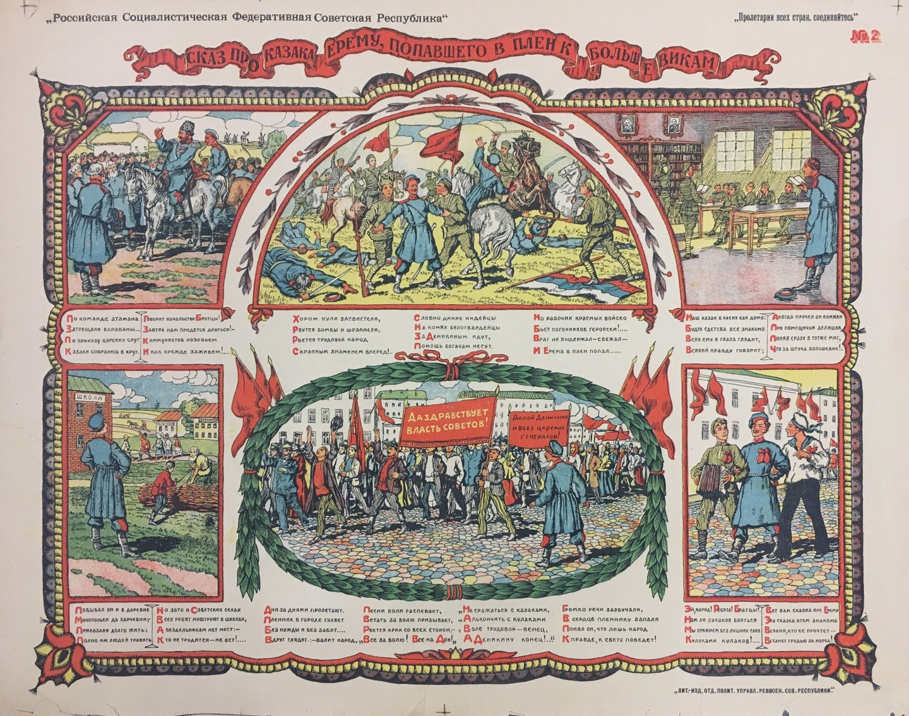
Сказ про казака Ерему, попавшего в плен к большевикам
1919 г.
Агитационный плакат в форме народного лубка, рассказывающий историю казака, перешедшего на сторону красных. В 1919 году казачество было расколото — часть поддерживала белых генералов (Деникина, Краснова), часть сражалась за красных. Спасский использовал традиционную форму лубочной картинки с рифмованными подписями, понятную простому народу. Плакат показывает, как пленный казак убеждается в правоте большевиков и добровольно вступает в Красную Армию. Это была важная пропагандистская задача — переманить казаков, чья военная выучка и боевой опыт были критически важны. Форма народного сказа делала агитацию более доступной и убедительной для казачьего населения, воспитанного на традиционной культуре.
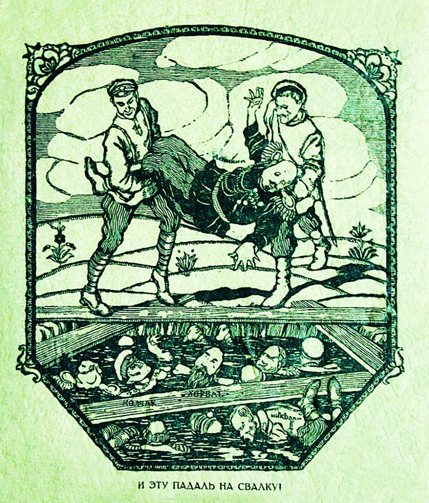
И эту падаль на свалку!
1920 г.
Сатирический плакат, изображающий разгром последних белогвардейских сил в 1920 году. После поражения Деникина и Колчака, последним крупным противником Советской власти оставался барон Врангель в Крыму. Спасский использует грубую, но эффективную метафору — белогвардейцы изображены как мусор, который нужно выбросить на свалку истории. Плакат отражает настроение победы и уверенности красных после перелома в Гражданской войне. К 1920 году стало ясно, что белое движение обречено, и пропаганда перешла от призывов к мобилизации к торжеству победы. Грубый, площадной язык плаката был рассчитан на массовую аудиторию и отражал ожесточение многолетней братоубийственной войны.
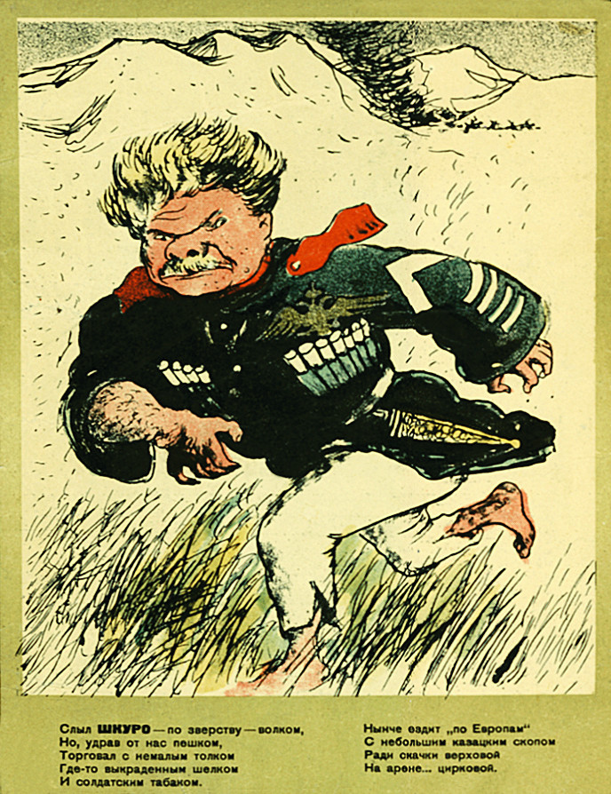
Шкуро
Художники: Кукрыниксы (Куприянов М. В., Крылов П. Н., Соколов Н. А.)
После 1935 г.
Карикатура на генерала Андрея Шкуро, одного из самых жестоких белогвардейских командиров времён Гражданской войны. Шкуро командовал конным корпусом в армии Деникина и прославился особой жестокостью по отношению к пленным и мирному населению. Его «Волчья сотня» стала символом белого террора на Кубани и Северном Кавказе. Кукрыниксы создали серию карикатур «Кого мы били» в середине 1930-х годов, когда советская власть уже прочно утвердилась и можно было с иронией вспоминать поверженных врагов. Плакат высмеивает Шкуро как бандита и авантюриста, лишая его ореола военного героя. После войны Шкуро эмигрировал, во время Второй мировой сотрудничал с нацистами и был выдан СССР, где был казнён в 1947 году.
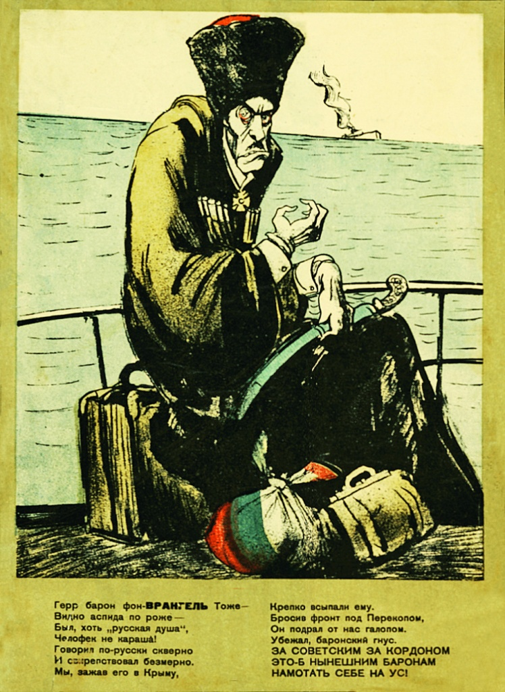
О бароне Врангеле
После 1935 г.
Карикатура на барона Петра Врангеля, последнего главнокомандующего белыми армиями в Гражданской войне. После разгрома Деникина в 1920 году Врангель возглавил остатки белых сил в Крыму и предпринял последнюю попытку наступления на Советскую Россию. Его называли «чёрным бароном» из-за чёрной казачьей формы, которую он носил. Врангель был более умелым военачальником и политиком, чем его предшественники, но к 1920 году судьба белого движения была предрешена. Кукрыниксы изобразили его как карикатурного аристократа, оторванного от народа. В ноябре 1920 года армия Врангеля была разгромлена, и он эвакуировал остатки войск в Константинополь. Плакат из серии «Кого мы били» создан спустя 15 лет, когда Гражданская война стала историей, а её участники — персонажами советской мифологии.
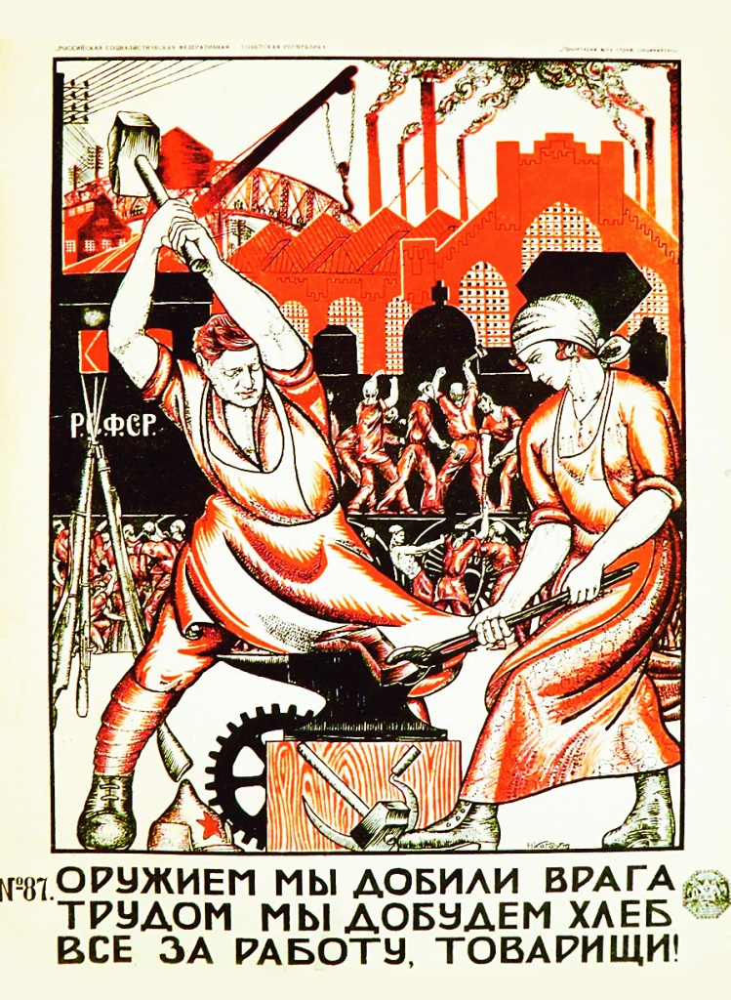
Оружием мы добили врага. Трудом мы добудем хлеб. Все за работу, товарищи!
1920 г.
Плакат переходного периода от войны к миру, призывающий к восстановлению разрушенного хозяйства. К концу 1920 года основные белогвардейские армии были разгромлены, и перед Советской властью встала задача восстановления экономики после трёх лет Первой мировой и трёх лет Гражданской войны. Промышленность была разрушена, сельское хозяйство в упадке, транспорт парализован. Когоут создал образ перехода от военной мобилизации к трудовой — винтовка меняется на плуг и молот. Плакат отражает политику «военного коммунизма» и начало трудовых армий, когда демобилизованные красноармейцы направлялись на восстановление промышленности и сельского хозяйства. Это был призыв применить военную дисциплину и энтузиазм к мирному труду.
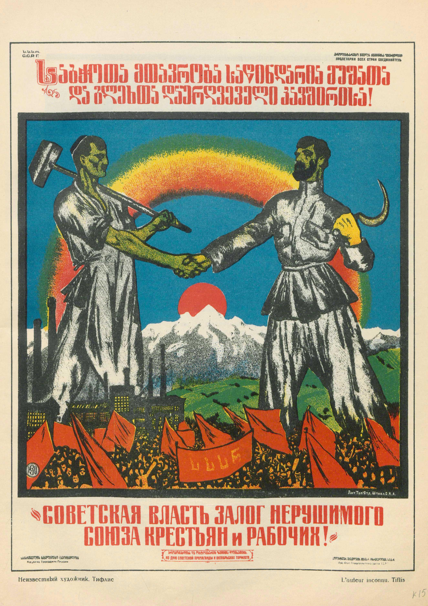
Только тесный неразрывный союз рабочих и крестьян спасет Россию от разрухи и голода
1920 г.
Плакат, провозглашающий основной принцип советской власти — союз рабочего класса и крестьянства. После окончания активной фазы Гражданской войны перед большевиками встала задача удержать власть и восстановить разрушенную экономику. Главным противоречием была разница интересов между городом и деревней — рабочие нуждались в хлебе, крестьяне в промышленных товарах. Политика продразвёрстки вызывала недовольство крестьян, что приводило к восстаниям. Плакат призывает к преодолению этих противоречий через классовую солидарность. Символическое рукопожатие рабочего и крестьянина стало одним из главных образов советской пропаганды. Этот союз был закреплён в государственной символике СССР — серп и молот, представляющие крестьянство и рабочий класс.
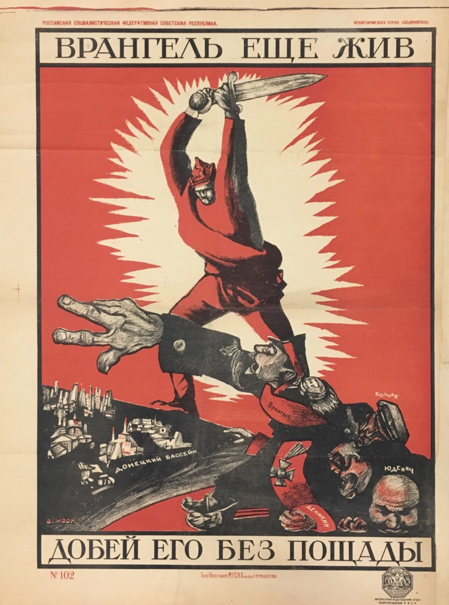
Врангель еще жив, добей его без пощады
1920 г.
Один из последних мобилизационных плакатов Гражданской войны, созданный летом 1920 года во время решающего наступления на Крым. После разгрома Деникина барон Врангель возглавил остатки белых сил и в июне 1920 года начал наступление из Крыма на север. Моор создал зловещий образ Врангеля как скелета-смерти, угрожающего Советской России. Плакат призывал к последнему усилию для окончательного разгрома белого движения. Осенью 1920 года Красная Армия под командованием Фрунзе штурмом взяла укрепления Перекопа и ворвалась в Крым. В ноябре 1920 года Врангель эвакуировал остатки армии в Константинополь, что фактически завершило Гражданскую войну. Этот плакат стал символом финального этапа борьбы красных против белых.
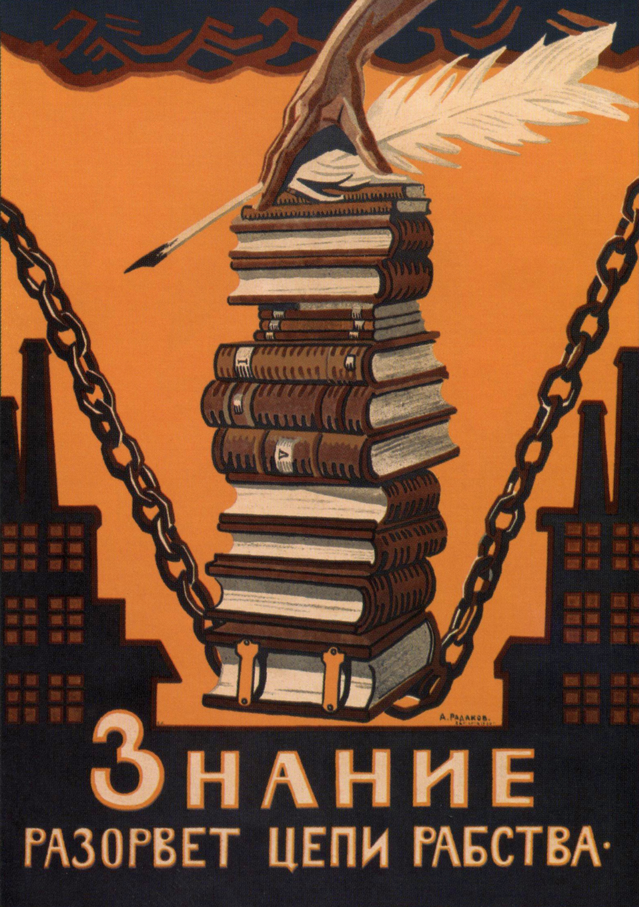
Знание разорвет цепи рабства
1920 г.
Плакат, посвящённый кампании по ликвидации безграмотности, начатой после Гражданской войны. В 1920 году около 70% населения России было неграмотным, что большевики считали главным препятствием для построения нового общества. Радаков создал мощный символический образ — книга разрывает цепи невежества и рабства. Плакат отражает просветительскую программу советской власти, которая рассматривала образование как инструмент социального освобождения. В декабре 1919 года был издан декрет о ликвидации безграмотности, обязывающий всё население от 8 до 50 лет учиться читать и писать. Создавались пункты ликбеза, издавались буквари, мобилизовывались учителя. Плакат связывает грамотность с революционным освобождением, показывая образование как продолжение политической борьбы.
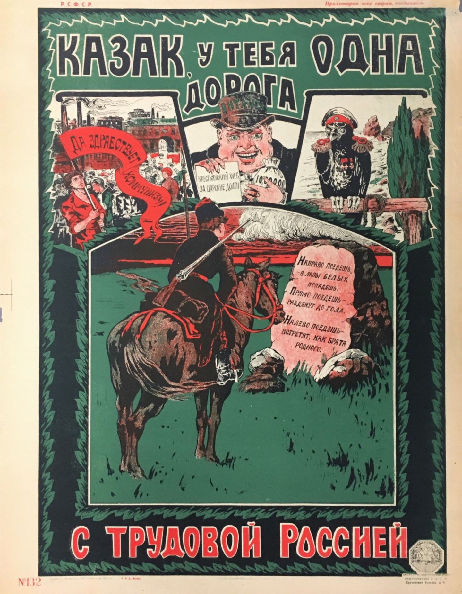
Казак, у тебя одна дорога с трудовой Россией
1920 г.
Агитационный плакат, обращённый к казачеству в завершающий период Гражданской войны. Казаки были расколоты — значительная часть поддерживала белых генералов, но многие сражались за красных или пытались сохранить нейтралитет. К 1920 году, после поражения Деникина и Колчака, стало ясно, что белое движение обречено. Моор призывает казаков признать реальность и присоединиться к победившей стороне. Плакат подчёркивает классовую общность трудового казачества с рабочими и крестьянами, противопоставляя их казачьей верхушке, служившей белым. Образ развилки дорог символизирует выбор между обречённым прошлым и новым будущим. После разгрома Врангеля многие казаки действительно примирились с советской властью, хотя репрессии против казачества продолжались ещё долго.
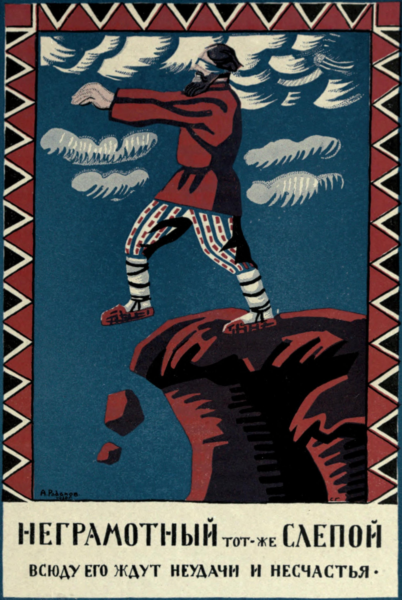
Неграмотный – тот же слепой, всюду его ждут неудачи и несчастья
1920 г.
Второй плакат Радакова из серии по ликвидации безграмотности, использующий более прямую и жёсткую метафору. Неграмотность приравнивается к слепоте — физическому недостатку, делающему человека беспомощным в современном мире. Плакат отражает утилитарный подход большевиков к образованию — грамотность нужна не только для культурного развития, но и для элементарного выживания в индустриальном обществе. В 1920-е годы неграмотность действительно была серьёзным препятствием — человек не мог прочитать инструкцию, объявление, газету, заполнить документ. Радаков создал образ, понятный простому народу, показывая практические последствия неграмотности. Кампания ликбеза была одной из самых успешных советских программ — к 1939 году грамотность населения выросла с 30% до 87%.
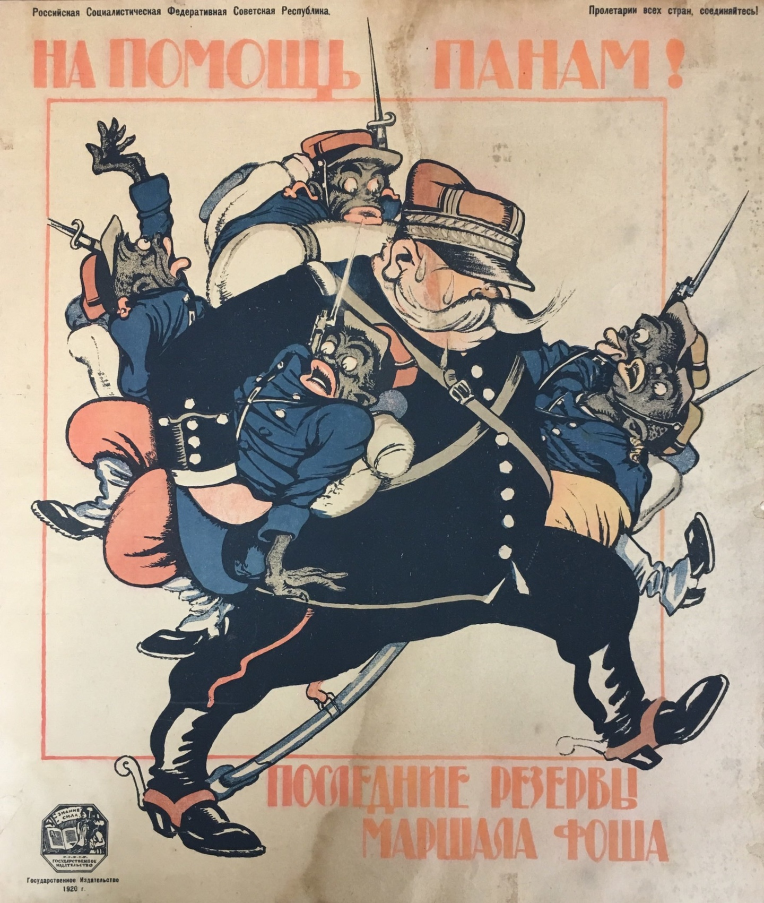
На помощь панам!
1920 г.
Сатирический плакат о советско-польской войне 1920 года, высмеивающий помощь Антанты Польше. Весной 1920 года Польша под командованием Пилсудского начала наступление на Украину и захватила Киев. Советская Россия нанесла контрудар, и Красная Армия дошла до Варшавы. Дени изобразил маршала Фоша, главнокомандующего войсками Антанты в Первой мировой, отправляющего на помощь польским «панам» жалкие остатки своих сил. Плакат высмеивает слабость западной поддержки Польши и показывает, что Антанта уже не способна серьёзно вмешиваться в дела России. «Паны» — ироническое обращение к польской шляхте, подчёркивающее классовый характер конфликта. После «чуда на Висле» и поражения под Варшавой был заключён Рижский мир 1921 года.
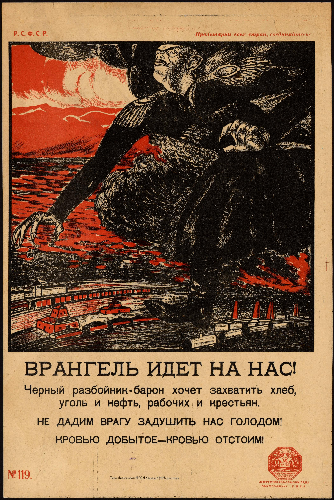
Врангель идет. К оружию, пролетарии!
1920 г.
Мобилизационный плакат, созданный летом 1920 года во время наступления Врангеля из Крыма. После поражения Деникина барон Врангель реорганизовал остатки белых сил и в июне 1920 года начал последнее крупное наступление белых в Гражданской войне. Его армия прорвалась в Северную Таврию и угрожала промышленному Донбассу. Кочергин создал драматический образ надвигающейся угрозы, призывая рабочих к оружию. Плакат появился в критический момент, когда основные силы Красной Армии были заняты войной с Польшей, а Врангель пытался воспользоваться этим для расширения плацдарма. Осенью 1920 года, после заключения перемирия с Польшей, Красная Армия обрушила всю мощь на Крым. Штурм Перекопа в ноябре 1920 года завершил эпоху Гражданской войны.

Ясновельможная Польша – последняя собака Антанты
1920 г.
Едкая сатира на Польшу и её роль в антисоветской интервенции 1920 года. Дени изобразил Польшу как цепного пса на поводке у Антанты, выполняющего грязную работу своих хозяев. Советско-польская война 1920 года была последней попыткой западных держав свергнуть большевиков чужими руками — после провала прямой интервенции 1918-1919 годов Антанта поддерживала Польшу оружием и деньгами. «Ясновельможная» — ироническое обращение к польской шляхте, подчёркивающее её претензии на величие при фактической зависимости от Запада. Плакат отражает ожесточение советско-польского конфликта, в котором обе стороны видели борьбу за выживание. После поражения Красной Армии под Варшавой и Рижского мира 1921 года Польша получила западные территории Украины и Белоруссии.
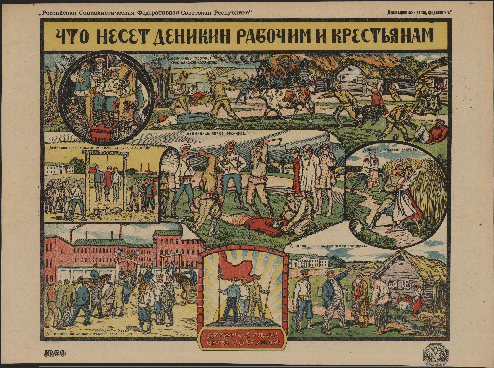
Что несет Деникин рабочим и крестьянам
1919 г.
Агитационный плакат в форме лубка, разоблачающий политику белогвардейского генерала Деникина. Осенью 1919 года армия Деникина представляла наибольшую угрозу для Советской власти — его войска заняли Украину, Донбасс, Царицын и наступали на Москву. Спасский использовал традиционную форму народной картинки с рифмованными подписями, показывая, что Деникин несёт возвращение помещиков, капиталистов и царских порядков. Плакат перечисляет конкретные угрозы — возврат земли помещикам, восстановление фабрикантов, телесные наказания, погромы. Это была эффективная контрпропаганда против белых, которые действительно восстанавливали старые порядки на занятых территориях. Форма лубка делала сложные политические идеи понятными для малограмотного населения, а конкретные примеры были убедительнее абстрактных лозунгов.
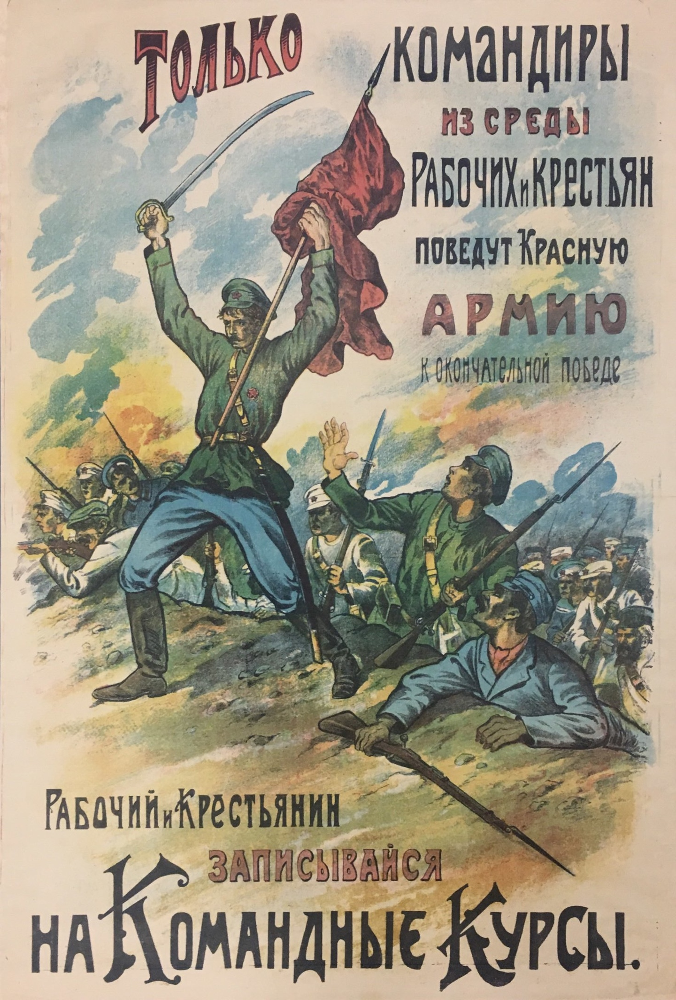
Только командиры из среды рабочих и крестьян поведут Красную армию к окончательной победе
1918 г.
Один из ранних плакатов, отражающих кадровую политику большевиков в Красной Армии. В 1918 году перед советской властью встала острая проблема — старые царские офицеры были профессионалами, но политически ненадёжными, а рабочие и крестьяне были преданы революции, но не имели военного образования. Троцкий настаивал на привлечении военспецов из бывших офицеров под контролем комиссаров, но многие большевики требовали выдвижения командиров из народа. Мухарский отразил эту вторую позицию, показывая идеал пролетарского командира. В реальности Красная Армия использовала компромисс — военспецы занимали технические должности, а политическое руководство осуществляли комиссары и командиры из рабочих. К концу Гражданской войны выросло новое поколение красных командиров — Фрунзе, Тухачевский, Будённый, вышедших из народа.
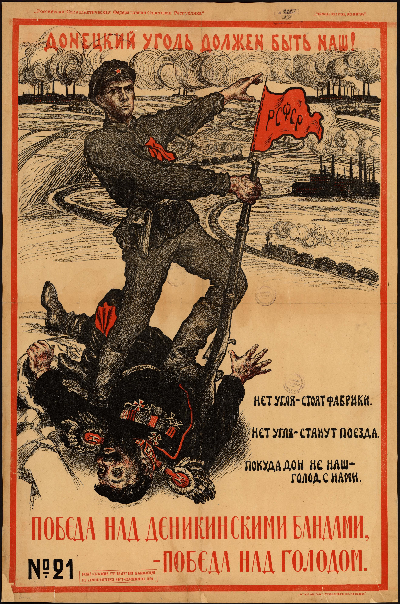
Донецкий уголь должен быть наш!
1919 г.
Плакат, подчёркивающий стратегическое значение Донецкого угольного бассейна в Гражданской войне. Донбасс был главным источником угля для промышленности России, и его контроль определял способность воюющих сторон поддерживать военную экономику. В 1919 году Донбасс находился под контролем армии Деникина, что создавало катастрофическую ситуацию для Советской России — без угля останавливались заводы, не работал транспорт, замерзали города. Спасский создал прямой и понятный призыв — вернуть Донбасс любой ценой. Плакат отражает экономическую составляющую Гражданской войны, где борьба шла не только за территории, но и за ресурсы. Освобождение Донбасса в конце 1919 года стало переломным моментом — красные получили топливо для промышленности, а белые лишились важнейшего экономического актива.